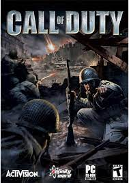

Gierkomania.pl

Opis Gry:
Call of Duty – strzelanka pierwszoosobowa osadzona w realiach II wojny światowej, wyprodukowana przez studio Infinity Ward i wydana przez Activision na komputery osobiste. Jej premiera na świecie odbyła się 29 października 2003 roku, a w Polsce – 5 grudnia tego samego roku.
